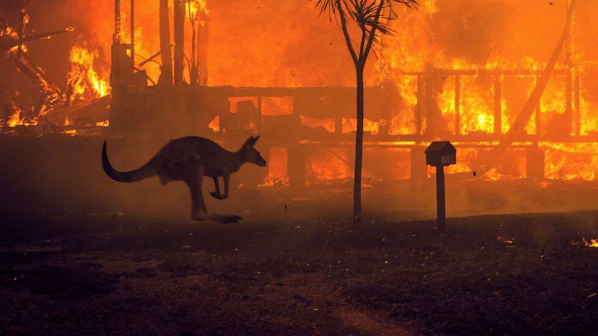
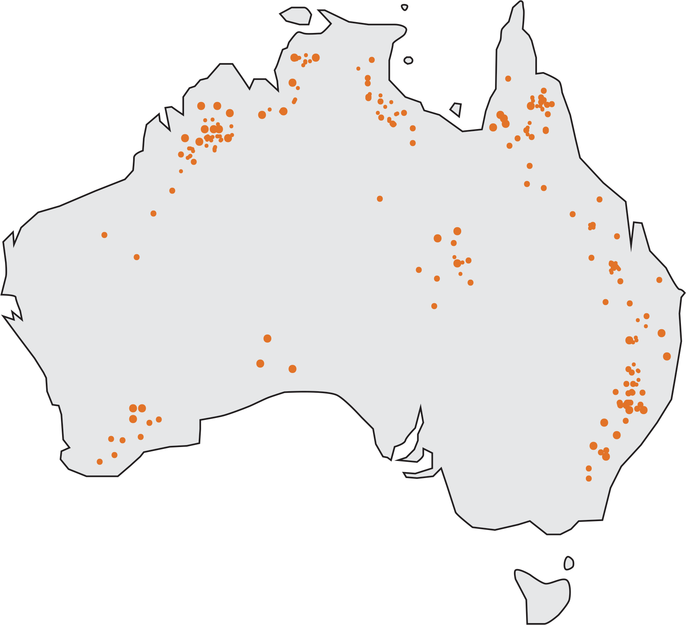
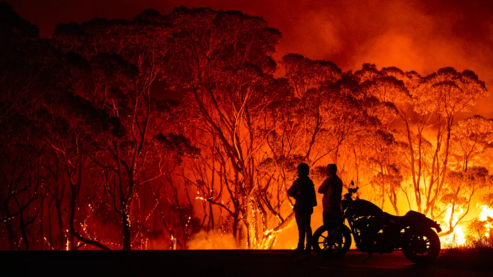

The most shocking effect that the Australian Bushfires have caused is the animal
death toll. Paired with the obvious destruction of the environment, proves that the wildlife
population of Australia is surely spiraling down. Ecologists estimate that 1 billion animals
have died due to the bushfire. This number includes animals of all species such as reptiles,
birds, mammals, as well as aquatic life being affected in some way from the Australian
Bushfires. While there have been lots of deaths caused directly by the fire, in Sigal Samuel
of Vox journalism states, “Other animals have not been burned alive but have faced death due
to the destruction of their natural environment, which they rely on for food and shelter.” A
large amount of Australia's animals are now nearly extinct, and if not the species, then the
species’ habitat. The Australian government has listed 113 species in total that need
“emergency intervention.” Australia's Department of Agriculture, Water, and Environment have
declared, “13 birds, 19 mammals, 20 reptiles, 17 frogs, five invertebrates, 22 crayfish and
17 fish that are currently under threat.” The Australian Bushfires have hurt the wildlife in
Australia, and without a doubt, it is a tragedy for the country of Australia in general.

Here is a kangaroo by the fire's glow

Here is a wallaby eating carrots given by rescuers

Here is a koala clinging on a tree for dear life as the fire
approaches